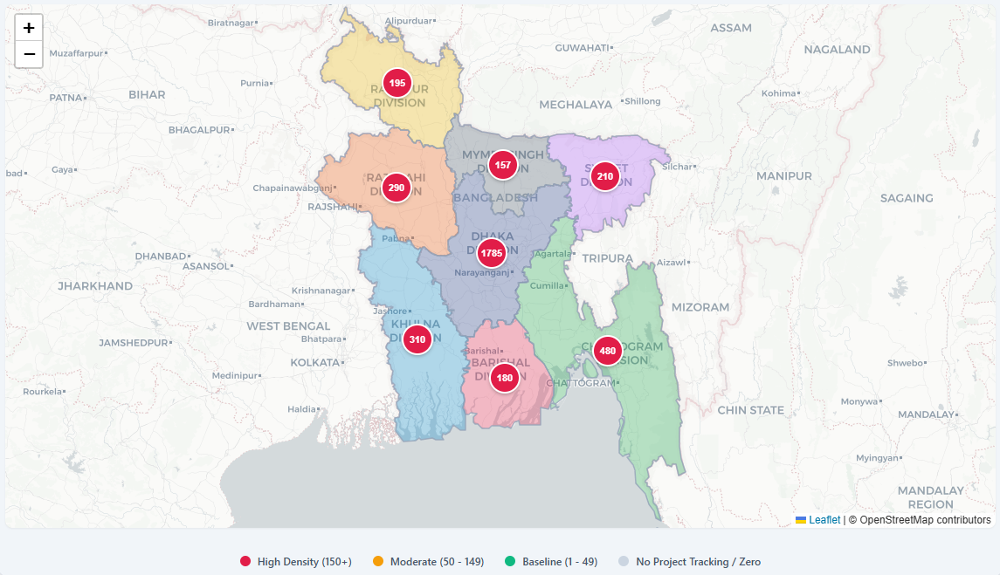

Interactive Spatial Drill-down Dashboard

Revised Allocation vs Actual Expenditure (in Crore Taka)
Original Allocation · Revised Allocation · Actual Expenditure (in Crore Taka)
Allocation distribution by Economic Sector | Total ADP Allocation: 211,403.58 Cr Taka